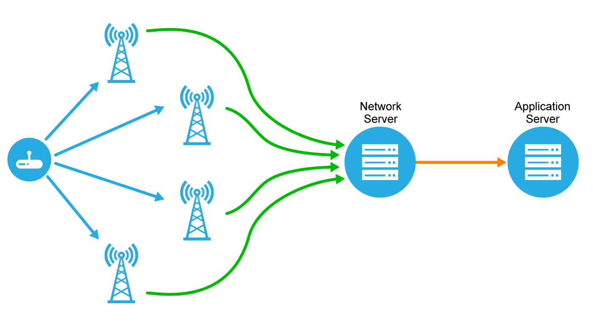

Posición de los HAB
Los HAB de Popaglobe y la información que capturen a través de sus diversos sensores, pueden ser ubicados y leidos en tiempo real a través de internet siguiendo la metodología IoT.
La posición de un HAB es obtenida a través del módulo GPS y es enviada utilizando el modulo LoRa WAN hacia las estaciones base.
LoRa WAN
LoRa es una tecnología inalámbrica (al igual que WiFi, Bluetooth, LTE, SigFox o Zigbee) que emplea un tipo de modulación en radiofrecuencia patentado por Semtech, una importante empresa fabricante de chips de radio. La tecnología de modulación se denomina Chirp Spread Spectrum (o CSS) y se emplea en comunicaciones militares y espaciales desde hace décadas.
Eleifend auctor turpis magnis sed porta nisl pretium. Aenean suspendisse nulla eget sed etiam parturient orci cursus nibh. Quisque eu nec neque felis laoreet diam morbi egestas. Dignissim cras rutrum consectetur ut penatibus fermentum nibh erat malesuada varius.
Firebase

Firebase de Google es una plataforma en la nube para el desarrollo de aplicaciones web y móvil. Está disponible para distintas plataformas (iOS, Android y web), con lo que es más rápido trabajar en el desarrollo.